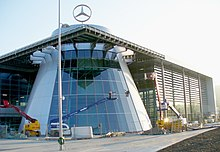
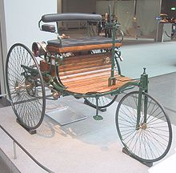

A Mercedes-Benz é uma marca alemã de automóveis pertencente a Mercedes-Benz Group criada em 1924, sendo resultado de uma fusão entre a Benz & Cie. e a Daimler-Motoren-Gesellschaft, é uma das mais antigas fabricantes de automóveis do mundo. Também produz caminhões, autocarros e os seus próprios motores.
A Mercedes-Benz tem suas origens na Mercedes 35 hp de 1901 da Daimler-Motoren-Gesellschaft e na Benz Patent-Motorwagen de 1886 da Rheinische Gasmotorenfabrik, Benz & Cie, que é amplamente considerado como o primeiro automóvel movido a gasolina. Criada em 1883, a Benz & Cie. foi a maior empresa criada pelo alemão Karl Benz. A Daimler foi fundada por Gottlieb Daimler e pelo seu parceiro Wilhelm Maybach em 1890. Daimler viria a morrer em 1900 e Maybach deixou a empresa em 1907. Nessa altura, a Daimler e a Benz eram as grandes rivais de uma da outra. Contudo em 1924, as duas empresas assinaram um acordo de ajuda mútuo devido à necessidade de estimular a economia germânica após a Primeira Guerra Mundial. Este acordo viria a ser quebrado em 2000. Mesmo assim, as duas empresas criaram os seus próprios automóveis e as suas próprias marcas. Em 1926, quando então se formou a empresa Daimler-Benz, um novo símbolo fora então criado para cada parte (Daimler e Benz).
